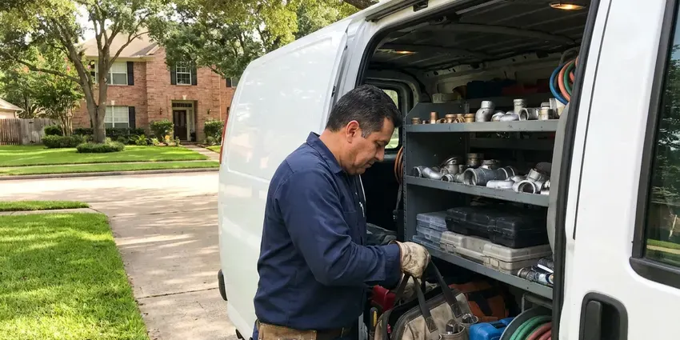

Drains Camera Inspection in Jackson, WY
No guessing, no exploratory digging. JKV Plumbing locates the problem and its depth before anyone picks up a shovel in Jackson, WY.
- Honest Reports
- Above-Ground Problem Marking
- Licensed Plumbers
- Video You Can Share

See Inside Your Sewer Line in Jackson, WY
Buying a home? Book the scope before your inspection window closes.
See What Is in Your Pipe in Jackson, WY
JKV Plumbing uses self-leveling HD push cameras and sondes to inspect lines from 1 1/2 inch branch drains to 6 inch mains. The image stays upright. Every defect is located from above and marked with paint or a flag, which keeps any later excavation small and accurate.
Some of what we do:
- Lost item location in drain lines
- HD self-leveling camera inspection of small and large lines
- Belly and sag detection on main lines

Additional Plumbing Maintenance Services in Jackson, WY
Our maintenance and specialty plumbing services in Jackson, WY catch small problems before they become emergencies.


Customers
Why Choose JKV Plumbing for Drains Camera Inspection in Jackson, WY?
Our techs have reviewed thousands of feet of pipe footage. They can tell big from small. A thin line of scale is not a crack, and a minor dip is different from a belly that holds waste, so the findings you get are sorted by what actually needs attention.
- HD Footage, Self-leveling cameras record sharp, well-lit video of the pipe.
- No Digging, The camera goes in through existing openings.
- Exact Locating, A transmitter in the camera head lets us mark the spot and depth from above.
Citywide Coverage
We run camera inspections across Jackson, from older homes with clay laterals to new construction checked before closing. We carry gear for both. Our cameras cover short bathroom lines and long runs out to the street main, and long reels for homes set back from the street.
Experienced Team
Our camera techs have reviewed thousands of feet of pipe. They know what they are seeing. They can tell a minor scale deposit from a serious crack, and they know which findings need attention this month and which can wait a few years.
Safety-First Approach
Your home gets protected while we work. Drop cloths go down. The push reel stays on a mat, and shoe covers keep the floors clean.
Trusted Certified Jackson Plumbing Services Professionals
At JKV Plumbing, we are proud to offer certified plumbing services throughout Jackson, WY. Credentials matter in this trade. Our plumbers hold recognized industry credentials, and they follow strict safety and quality rules on every repair, installation and maintenance call we run.
Call Us Now PHCC Plumbing Contractor Recognition
PHCC Plumbing Contractor Recognition Better Business Bureau (BBB) Accreditation
Better Business Bureau (BBB) Accreditation Angi Certified Pro
Angi Certified Pro ISO 9001 Quality Management Certification
ISO 9001 Quality Management CertificationWhat a Drain Camera Finds in Jackson, WY
Main Sewer Line Camera Inspection in Jackson
A main line scope follows the pipe from the cleanout to the city tap or the septic tank. Every joint gets a look. The sonde in the camera head transmits a signal, letting us paint each problem spot and note the depth. Any contractor can work from our notes.

Identifying Specific Pipe Damage in Jackson
Each kind of damage looks different on camera. Cracks show as dark lines. Offsets show as a lip where one pipe section has dropped below the next, sags show standing water and corroded iron looks rough and flaky. Knowing which one you have sets the repair.
Post-Repair and Post-Jetting Verification in Jackson
Once roots are cut, a line is jetted or a section is repaired, we scope the line again. You see the clean pipe. The footage confirms that roots are gone, grease is cleared and the new pipe is aligned. Landlords often want this.
Hydro-Jetting Pre-Inspection in Jackson, WY
Jetting a cracked or collapsing pipe can make it worse. The camera goes in before the jetter. A quick scope in Jackson, WY tells us if the line can handle jetting or needs a lighter touch. It takes about 20 minutes.
Sewer Line Camera Inspection in Jackson, WY
The main sewer lateral carries everything from your house to the city sewer. Nobody looks at it until it fails. Our camera travels the full length, showing root intrusion, cracked joints, offset pipe and bellies along with the footage counter so each defect has an exact distance. The locator then marks each one on the ground.
Post-Repair Inspection in Jackson
A new section of pipe should be straight, sealed and sloped correctly. The camera proves it. After a repair in Jackson, we scope the new pipe and its connections to make sure everything lined up. You keep the footage as a record.
Commercial Drain Camera Services in Jackson
Commercial drains in Jackson take a beating. Kitchen lines suffer most. We scope restaurant grease lines, shared apartment drains, office restroom lines and larger building mains, often after hours so tenants and customers are not disturbed. The footage goes to the property manager.

Camera Inspection Cost vs. Exploratory Digging in Jackson, WY
A camera inspection usually costs a few hundred dollars. Exploratory holes cost far more. Without a camera, a crew may open two or three holes trying to find a break that the camera and locator would have pinned to one spot within a foot. With footage and a mark on the ground, the excavation stays small. Restoration costs drop too.
Drains Camera Inspection Near Me in Jackson, WY
Searching "drains camera inspection near me" in Jackson, WY usually means something keeps going wrong with a drain. JKV Plumbing has camera techs working locally, so most inspections can be booked within a day or two of your call. Backups move to the front.
Home buyers in Jackson often have only a few days to get inspections done. Option periods are short. We try to fit sewer scopes in quickly, sending the video and notes the same day.
JKV Plumbing at a Glance
- Fully licensed plumbing team covering Jackson, WY
- Same-day appointments and 24/7 emergency response
- Upfront, flat-rate pricing before work begins
- 4.9-star rated by 782+ Wyoming customers
Jackson Map
Jackson Information
- Population
- 10,639
- Area codes
- Local
- Service area
- Jackson and towns within a 40 mile drive
- Nearby
- Lander, Cody, Riverton, Powell
Older homes may still have galvanized supply lines that narrow with rust and scale, causing low pressure and discolored water. Sewer lines that run through yards with big trees take damage nobody can see, so a camera is the fastest way to know what is down there in Jackson, WY.
Expert Services
Call JKV Plumbing for reliable plumbing work done by licensed pros in Jackson, WY.
Our Specialized Plumbing Services in Jackson, WY
At JKV Plumbing, you get every kind of plumbing service from one company across Jackson, WY. We go from leak detection all the way to full system installations, for homes and commercial buildings, and we do it quickly at a fair price. Explore our core services below:


What to Expect During a Sewer Scope in Jackson, WY
Expect a short conversation, the scope, the marks and a review of the video.
Book a Time
Call (307) 393-4049 and we will set an arrival window at your Jackson property.
Set Up
The tech protects the area and opens the cleanout or pulls a toilet. Blocked lines get cleared first.
Inspect the Line
We guide the camera through the pipe, pausing at each defect. The footage is recorded.
Frequently Asked Questions About Drains Camera Inspection in Jackson
A standard drain or sewer camera inspection usually costs $150 to $400. Marking the defects costs extra. Adding locating and depth marking typically brings the total to $250 to $500, and if the line has to be cleared before the camera can pass, that cleaning is billed as a separate item. The price is set before we begin.
No. The camera is gentle. The head is pushed slowly through the line on a flexible cable, through openings that are already there. Even fragile clay pipe handles it fine.
No, it needs open pipe. A full clog stops it. When the line is blocked, we clear it first with a cable or jetter and then run the camera, which also lets us see what caused the clog in the first place. Both can happen on one visit.
Repeat clogs are the top sign. Odors are another. Slow drains in several fixtures, gurgling toilets and sewage backups all suggest a deeper problem in the line that a camera can find and locate. In Jackson, older homes with clay pipe see these most.
Yes, the heads are fully waterproof. Most lines hold some water. The camera can travel through a few inches of water, though a belly that is completely full blocks the view until it drains or we push past it. We note those spots as bellies.
The usual reason is a repeat clog. Home purchases are common too. Inspections also make sense before a remodel, after a root problem, when sewage odors show up or when a plumber quotes an expensive repair and you want to see the damage for yourself. The footage settles the question.
We clear it. The camera goes back in after. Depending on what it is, we cable, jet or fish out the blockage and then inspect the cause. You get options if the pipe is damaged.
We review the footage with you. The recording is yours. Our written summary lists each finding with its distance and depth, along with a quote if anything needs fixing. Often nothing needs work.
What People Are Saying About Our Plumbing Experts?

Marcus H.
Grease from the fryer line kept clogging the kitchen drain at my diner. JKV Plumbing hydro jetted the line after closing, showed me the buildup on camera, and set us up on a quarterly cleaning so it does not catch us on a Friday again.
Drain Cleaning · Green River, WY
Laura S.
Our 40 gallon tank started leaking from the bottom after thirteen years. The tech hauled the old one out, set a new unit with a fresh expansion tank, and had hot water running in about four hours. He took the old tank with him too.
Water Heater Replacement · Green River, WYMonica A.
Our water bill nearly doubled in one month with no change in how we used water. The tech checked the meter, heard the leak under the hallway with his equipment, and opened a hole about a foot square. Fixed the same day.
Slab Leak Repair · Riverton, WY
Nathan E.
Our tankless heater kept throwing an error code and shutting off mid shower. The tech flushed the heat exchanger, which was full of scale, and replaced a bad flow sensor. Hot water has been steady for half a year now.
Water Heater Repair · Riverton, WY
Lisa C.
Water was pouring out from under the washing machine on a holiday weekend. JKV Plumbing talked me through closing the valves over the phone and had a plumber at the house within ninety minutes. It was a burst fill hose.
Emergency Plumbing · Powell, WY
Diane F.
My kitchen faucet had dripped for months and I finally got tired of hearing it at night. JKV Plumbing came out the next morning, replaced the cartridge and the O rings, and tightened a loose base that was letting water under the sink.
Faucet Repair · Powell, WY